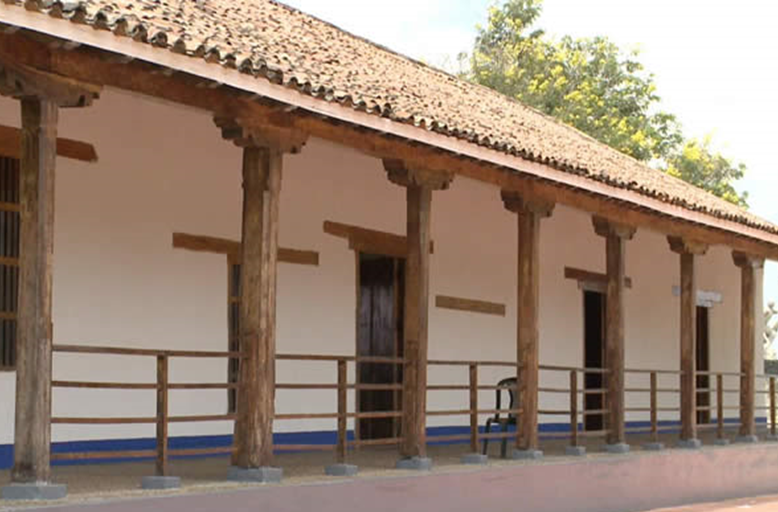
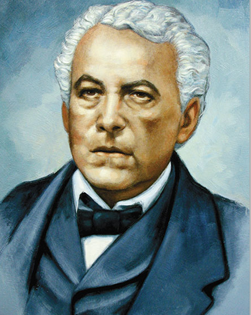
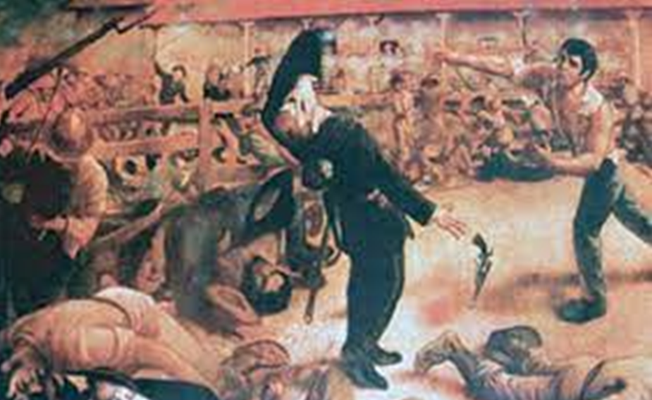
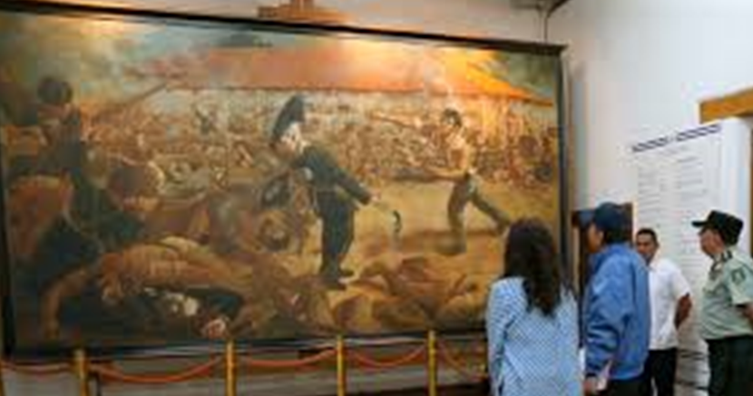

LA BATALLA DE SAN JACINTO
La batalla de San Jacinto del 14 de Septiembre de 1856, en el que se enfrentaron un grupo de patriotas nicaragüenses y una banda de filibusteros norteamericanos, es uno de los hechos más memorables de la historia de Nicaragua. El Coronel José Dolores Estrada, había recibido órdenes de no enfrentar al enemigo, excepto si le cortaban la retirada. Había sido mandado a los llanos de Tipitapa para bloquear las actividades de los filibusteros a la cabeza de entusiastas jóvenes mal armados con fusiles de chispa, machetes y lanzas. Habían recorrido cientos de kilómetros por las espesas montañas de Chontales y Matagalpa, subiendo cerros, cruzando ríos, donde buscaban pedernales para sus rifles.
Llegaron a la hacienda San Jacinto a fines de agosto de 1856. Sucedió entonces que una guerrilla encontró cerca de Tipitapa a una cuadrilla de yanquis a los que emboscaron y a uno de los cuales llevaron prisionero a la hacienda. Para el Coronel Estrada esa era una señal para replegarse y evitar una confrontación directa con los filibusteros, de acuerdo a las instrucciones recibidas. En un consejo improvisado discutieron qué hacer ante el inminente ataque del enemigo. Todos votaron a favor de quedarse y enfrentar el ataque.
Un rapto de inspiración:En un rapto de inspiración y empuñando su espada, el Coronel Estrada, dijo: “No nos devolveremos de aquí, pero no seré yo quien dé parte de la derrota. Ustedes son jóvenes y se avergonzarán sino cumplen su deber”. Todos aplaudieron y gritaron consignas de victoria. Fueron entonces donde tenían amarrado al yanqui fuera de la casa y en el acto lo fusilaron sin gastar más que cuatro tiros. Entonces empezaron a hacer barricadas alrededor de la casa-hacienda, previendo que el enemigo trataría de asaltarlos por sorpresa, pero ellos ya tenían la orden de disparar a quema ropa y estaban convencidos que antes de retroceder, era preferible la muerte.William Walker sabía que la presencia de tropas legitimistas en los alrededores de Tipitapa, así que encomendó al Teniente-Coronel, Edmund H. McDonald cruzar el río Tipitapa, para atacar al enemigo asentado en la hacienda San Jacinto, calculado en unos 120 soldados. El 5 de Septiembre, unos 40 filibusteros atacan durante más de dos horas a las fuerzas nicaragüenses que hacen resistencia desde la casa-hacienda San Jacinto, donde se protegen gracias a sus gruesas paredes de adobe y los corrales de piedra.
Impacto entre filibusteros: En Granada, la noticia enardeció a muchos filibusteros que no concebían que soldados nicaragüenses hayan podido repeler a un contingente norteamericano. Entonces organizaron una nueva fuerza, y parten hacia Tipitapa, para luego llegar a San Jacinto en la madrugada del 14 de septiembre. Una fuerte neblina rodea la hacienda y la fuerza de 60 filibusteros se organiza en tres compañías, una al mando de Capitán Lewis D. Watkins, otra bajo la dirección del Teniente Roberto Milligan y una tercera, bajo el mando del Mayor Calvin O’Neill.
La pedrada de Andrés Castro: Los filibusteros atacaron con sus revólveres y rifles e hicieron estragos en su primera embestida, no sin pagar caro su arremetida. Cruzaron el corral e hicieron que las fuerzas nicaragüenses se replegaran dentro de la casa. El soldado, Andrés Castro, al no poder usar su rifle, se hizo de piedras para derribar y matar a un filibustero. En medio de la confusión y el ataque permanente de los filibusteros que se habían parapetado detrás de los muros de piedra, el Coronel Estrada mandó una guerrilla por el flanco izquierdo, para atacar al enemigo por la retaguardia. El triunfo de los patriotas nicaragüenses en San Jacinto sobre las fuerzas filibusteras rompería con el mito de su invencibilidad y abriría una nueva coyuntura en la guerra patriótica centroamericana.



